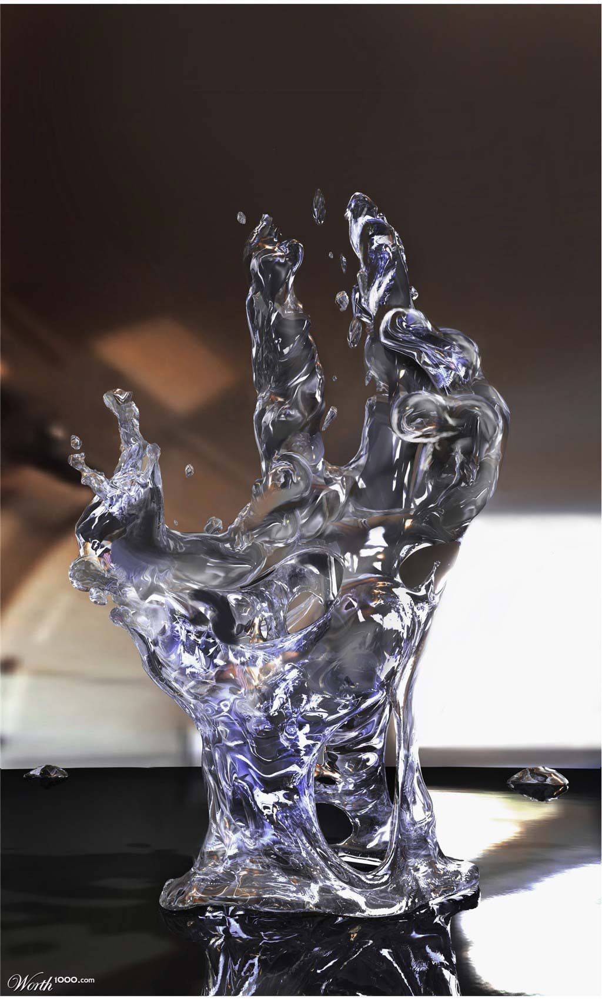

Wet Hand
Photoshop Contest - Worth1000.com
Wet Hand
Wet Hand was an entry I created for the photoshop contest "Alternative Materials 2 - Water" and somehow, I managed to take 2nd place, however, the site eventually used my entry as the cover photo for the contest album, as well as using it as their featured photo of the day. This particular photoshop piece took a few hours to complete if I remember correctly. I was playing in the liquify tool for way too long. In case you don't believe my mad photoshop skills here are the two photos I used for sources: water & hand.


